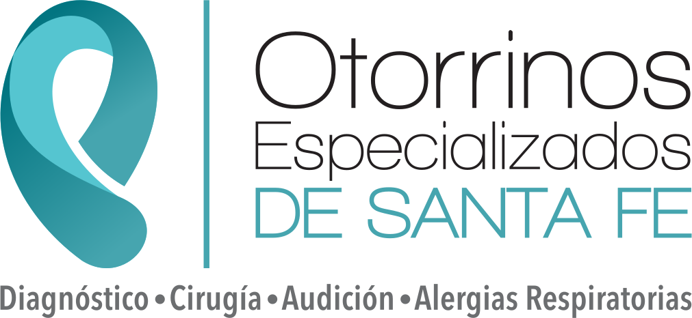
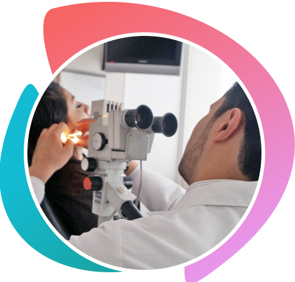
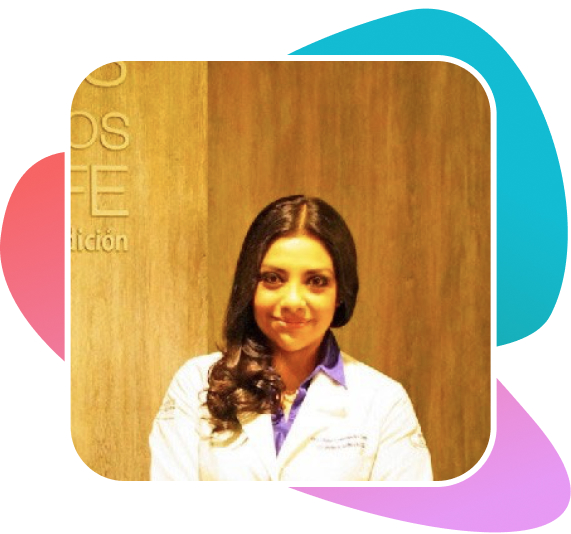
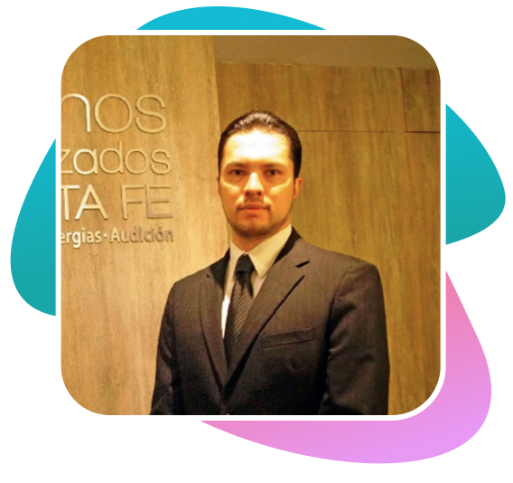

Somos un Grupo de Especialistas Médicos en Otorrinolaringología.
La Otorrinolaringología es la especialidad médica que trata las enfermedades relacionadas con el oído, nariz y garganta.
Nuestra labor incluye el diagnóstico de enfermedades, trastornos y dolencias mediante diversas pruebas. Algunas enfermedades relacionadas con la especialidad requieren de un tratamiento farmacológico. Otras enfermedades pueden requerir intervenciones quirúrgicas tanto a pacientes adultos o niños.
Servicios
Cirugías
{{item}}
Alergias
{{item}}
Audición
{{item}}
Experiencia
En otorrinos especializados nos comprometemos a ofrecer un servicio profesional y de alta calidad. Por esto nuestros especialistas cuentan con las certificaciones que garantizan una práctica actualizada para los pacientes que cursan con algún problema de salud relacionado con la especialidad.


Dra. Liliana Elizabeth Hernández Carpio
Médico Cirujano egresada de La Universidad Panamericana

Dr. José Antonio Pirrón Lozano
Cuenta con un postgrado en Trastornos Naso-Sinusales
Convenios
Galería
Contacto
Sucursal Santa Fe
Av. Vasco de Quiroga No 4299
Piso 9, Consultorio 904, Col Santa Fe
Ciudad de México. (frente a Hospital ABC)
Tel.: 55 5812 1322
Tel.: 55 5343 7641
AVISO DE PRIVACIDAD
1 IDENTIDAD Y DOMICILIO DEL RESPONSABLE. El presente Aviso de Privacidad (en lo sucesivo referido como “Aviso”) establece los términos y condiciones en virtud de los cuales Otorrinos Especializados de Santa Fe (en adelante “El Centro Médico”), con domicilio para oír y recibir notificaciones en Av. Vasco de Quiroga No 4299 Piso 9 Consultorio 904, Col. Santa Fe, Cuajimalpa, Ciudad de México.; en su carácter de Responsable (José Antonio Pirrón Lozano) tratará los datos personales del Titular.
2 CONSENTIMIENTO DEL TITULAR. Para efectos de lo dispuesto en la Ley Federal de Protección de Datos Personales en Posesión de los Particulares (la “LFPDP”) y demás legislación aplicable, el Titular manifiesta (i) que el presente Aviso le ha sido dado a conocer por el Responsable, (ii) haber leído, entendido y acordado los términos expuestos en este Aviso, por lo que otorga su consentimiento respecto del tratamiento de sus datos personales.
3 DATOS PERSONALES QUE RECABAMOS. El Centro Médico puede recolectar datos personales del Titular mediante la entrega directa y/o personal por cualquier medio de contacto entre el Titular y el Responsable o sus Encargados.
El Centro Médico recaba datos personales de identificación, asimismo recaba datos personales sensibles.
4 FINALIDAD DE LOS DATOS PERSONALES.
FINALIDADES PRIMARIAS. El Centro Médico tratará los datos personales del Titular con la finalidad de llevar a cabo las actividades y gestiones enfocadas al cumplimiento de comunicación derivada de la prestación del servicio; facturación; cobranza; atención a clientes; otorgamiento de garantías y contacto con el cliente.
FINALIDADES SECUNDARIAS. Asimismo, El Centro Médico tratará datos personales para otras finalidades como enviar notificación de ofertas, avisos y/o mensajes promocionales; comunicaciones con fines de mercadotecnia, publicidad o telemarketing sobre productos y servicios nuevos o existentes ya sean propios o de socios comerciales; realizar encuestas; estadísticas; estudios de mercado, registros sobre hábitos de consumo a través de herramientas de captura automática de datos, intereses y comportamiento; realizar programas de beneficios e incentivos; participar en redes sociales, chats y/o foros de discusión; participar en eventos, trivias, concursos, rifas, juegos y sorteos; evaluar la calidad de los servicios; y en general para cualquier actividad encaminada a promover, mantener, mejorar y evaluar sus productos y servicios.
Puede oponerse al tratamiento de sus datos para las finalidades secundarias a través de los medios puestos a su disposición para el ejercicio de sus derechos ARCO. En caso de no oponerse en un plazo de cinco días hábiles posteriores a que sus datos fueron recabados, se entenderá que ha otorgado su consentimiento
5 PROCEDIMIENTO PARA EJERCER LOS DERECHOS ARCO (ACCESO, RECTIFICACIÓN, CANCELACIÓN Y OPOSICIÓN) Y REVOCACIÓN DEL CONSENTIMIENTO. El Titular tiene, en todo momento, derecho de acceder, rectificar y cancelar sus datos, así como de oponerse al tratamiento de los mismos o revocar el consentimiento que haya proporcionado presentando una solicitud en el formato que para tal fin le entregaremos a petición expresa, misma que debe contener la información y documentación siguiente:
i Nombre del Titular y domicilio u otro medio para comunicarle la respuesta a su solicitud;
ii Los documentos vigentes que acrediten su identidad (copia simple en formato impreso o electrónico de su credencial de elector, pasaporte o Visa) o, en su caso, la representación legal del Titular (copia simple en formato impreso o electrónico de la carta poder simple con firma autógrafa del Titular, el mandatario y sus correspondientes identificaciones oficiales vigentes – credencial de elector, pasaporte o Visa);
iii La descripción clara y precisa de los datos respecto de los que busca ejercer alguno de los Derechos ARCO, y Cualquier otro elemento o documento que facilite la localización de los datos personales del Titular.
En el caso de las solicitudes de rectificación de datos personales, el Titular deberá también indicar las modificaciones a realizarse y aportar la documentación que sustente su petición.
Para dar cumplimiento a la obligación de acceso a sus datos personales, se hará previa acreditación de la identidad del titular o personalidad del representante; poniendo la información a disposición en sitio en el domicilio del Responsable. Se podrá acordar otro medio entre el Titular y el Responsable siempre que la información solicitada así lo permita.
Para la petición del formato, recepción y respuesta de las solicitudes para ejercer sus derechos ARCO (ACCESO, RECTIFICACIÓN, CANCELACIÓN Y OPOSICIÓN), la revocación de su consentimiento y los demás derechos previstos en la LFPDP ponemos a su disposición los siguientes medios:
Oficina de Protección de Datos PersonalesCorreo electrónico: datos.personales.mx@telefonica.comPresencial: Prolongación Paseo de la Reforma No. 1200 piso 18; Colonia Cruz Manca; Delegación Cuajimalpa, C.P.05349, México, D.F.
En caso de que la información proporcionada en su solicitud sea errónea o insuficiente, o bien, no se acompañen los documentos de acreditación correspondientes, podremos solicitarle, dentro de los cinco días hábiles siguientes a la recepción de la solicitud, que aporte los elementos o documentos necesarios para dar trámite a la misma. El Titular contará con diez días hábiles para atender el requerimiento, contados a partir del día siguiente en que lo haya recibido. De no dar respuesta en dicho plazo, se tendrá por no presentada la solicitud correspondiente.
El Centro Médico responderá al Titular en un plazo máximo de veinte días hábiles, contados desde la fecha en que se recibió la solicitud a efecto de que, si resulta procedente, haga efectiva la misma dentro de los quince días hábiles siguientes a que se comunique la respuesta. En todos los casos, la respuesta se dará por la misma vía por la que haya presentado su solicitud o en su caso por cualquier otro medio acordado con el Titular. Los plazos antes referidos podrán ser ampliados en términos de la LFPDP.
6 LIMITACIÓN DE USO Y DIVULGACIÓN DE LA INFORMACIÓN. El Responsable y/o sus Encargados conservarán los datos personales del Titular durante el tiempo que sea necesario para procesar sus solicitudes de información, productos y/o servicios, así como para mantener los registros contables, financieros y de auditoria en términos de la LFPDP y de la legislación mercantil, fiscal y administrativa vigente.
7 LIMITACIÓN DE USO Y DIVULGACIÓN DE LA INFORMACIÓN. El Responsable y/o sus Encargados conservarán los datos personales del Titular durante el tiempo que sea necesario para procesar sus solicitudes de información, productos y/o servicios, términos de la LFPDP y de la legislación mercantil, fiscal y administrativa vigente.
Los datos personales recolectados se encontrarán protegidos por medidas de seguridad administrativas, técnicas y físicas adecuadas contra el daño, pérdida, alteración, destrucción o uso, acceso o tratamiento no autorizados, de conformidad con lo dispuesto en la LFPDP y la demás legislación aplicable. No obstante lo señalado anteriormente, El Centro Médico no garantiza que terceros no autorizados no puedan tener acceso a los sistemas físicos o lógicos de los Titulares o del Responsable o en los documentos electrónicos y archivos almacenados en sus sistemas. En consecuencia, El Centro Médico no será en ningún caso responsable de los daños y perjuicios que pudieran derivarse de dicho acceso no autorizado.
Usted o su representante legal debidamente acreditado podrán limitar el uso o divulgación de sus datos personales a través de los mismos medios y procedimientos dispuestos para el ejercicio de los Derechos ARCO. Si su solicitud resulta procedente, será registrado en el listado de exclusión dispuesto por El Centro Médico para dejar de recibir información relativa a campañas publicitarias o de mercadotecnia.
Asimismo, le asiste el derecho de inscribirse en el Registro Público para Evitar Publicidad (REPEP) de la PROFECO http://repep.profeco.gob.mx
En caso de que usted considere que El Centro Médico ha vulnerado su derecho a la protección de sus datos personales, puede acudir al Instituto Nacional de Transparencia, Acceso a la Información y Protección de Datos Personales (“INAI”).
8 CAMBIOS AL AVISO. El Centro Médico se reserva el derecho de actualizar periódicamente el presente Aviso para reflejar los cambios en sus prácticas de información. Es responsabilidad del Titular revisar el contenido del Aviso en el sitio http://www.otorrinosensantafe.com.mx/aviso-de-privacidad o solicitándolo al correo electrónico comunicacion@otorrinosensantafe.com.mx El Responsable entenderá que de no expresar lo contrario, significa que el Titular ha leído, entendido y acordado los términos ahí expuestos, lo que constituye su consentimiento a los cambios y/o actualizaciones respecto al tratamiento de sus datos personales.